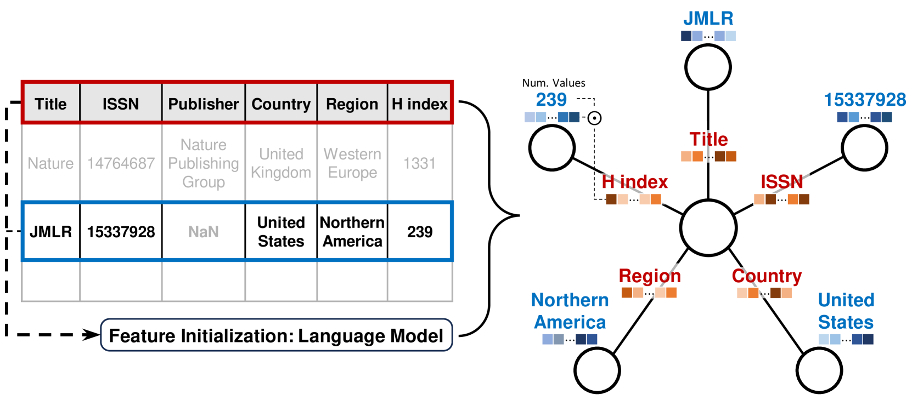

Note
Foundation models, pretrained and readily usable for many downstream tasks, have changed the way we process text, images, and sound. Can we achieve similar breakthroughs for tables? Here I explain why with “CARTE”, we’ve made significant headway.
Contents
Pre-training for data tables: hopes and challenges
Pre-training is a necessity
Foundation models have brought breakthroughs to text and image processing because they embark a great deal of knowledge on these data, knowledge that can then be reused to simplify processing. But their promises have not come true for tables, which hold much of an organization’s specific data, eg relational databases capturing day-to-day operations, or measurements tables related to a specific source of data.
Rather, for tabular learning, a couple of years ago our extensive benchmarks showed that tree-based models outperformed even deep-learning architectures specially crafted for data tables.
One challenge is that typically tables are not that big and thus the high flexibility of deep learning is a weakness rather than a benefit. This shortcoming was solved by pretrained models, for data modalities where deep learning has been vastly successful: most people do not train a deep-learning model from scratch, but download a pre-trained one from model hubs. Such universal pre-training is also at the root of foundation models.
Pretraining for data tables?
But what does pretraining mean for data tables? If I give you a table of numbers, what can prior information can you use to process it better? Images and text have a lot of regularity that repeat across datasets: I can recognize a car on pictures coming from all kinds of camera (including old black and white photographs). I use my knowledge of the meaning of words to understand a text. But given a table of number as below, what sense can I make of it?
The tabular learning challenge: every table is a special snowflake
| 72 | 68 | 174 | 1 |
| 64 | 79 | 181 | 1 |
| 56 | 59 | 166 | 0 |
| 81 | 62 | 161 | 1 |
The reason a data analyst can understand this data and use this understanding to build a better data-processing pipeline is because the data comes with context: meaningful strings sprinkled around these numbers. For instance, a table with the same numbers as above but a bit of column names and string entries makes completely sense:
| Age | Weight | Height | Commorbidity | Cardiovascular event |
|---|---|---|---|---|
| 72 | 68 | 174 | Diabetes | 1 |
| 64 | 79 | 181 | Cardiac arrhythmia | 1 |
| 56 | 59 | 166 | NA | 0 |
| 81 | 62 | 161 | Asthma | 1 |
In such a setting, it becomes clear what background knowledge, what pre-training can bring to analyzing data tables: string entries and column names bring meaning to the numbers in data tables.
Another way to seeing the challenge is that of data integration: as studied by the knowledge representation and database communities, putting multiple sources of data in a consistent representation requires:
- schema matching, which to a first order is about finding column correspondences across tables
- entity matching, finding correspondences across table entries denoting the same thing, for instance “Diabetes” and “Diabetes melitus”
These challenges of data integration are central to building pretrained or foundation models for tables. Indeed, such models must apply to all tables, and thus must bridge these gaps across tables.
CARTE: a table foundation model breakthrough
Our recent CARTE paper builds upon the above insights, and demonstrates that pretraining can give models that markedly improve performance.
An architecture to learn across tables
Graphlets The key ingredient of CARTE is how we represent the inputs. CARTE’s goal is to build predictors on rows of tables, for instance associating features of an individuals to a risk of developing adverse cardiovascular events. To pretrain across tables, we use a universal representation of the data (rows of tables), as small graphs.

Turning table rows into graphlets. Each column leads to an edge and the column name is turned into the corresponding edge feature. It’s a “multirelational graph”. The entry associated with the given column is turned into the corresponding node feature, and the row is represented as a special row token in the center of the graphlet.
Thus, tables with different number of columns can be turned into a consistent representation. But an additional benefit of this representation is that it can represent data across multiple tables with shared keys (for instance all the visits of a patient to a hospital).
A representation that can bridge tables without schema or entity
matching
String embeddings The second ingredient is to represent all strings and embeddings, using a pretrained language model, whether it is for column names or string entries. With good language model will embed close by different string with similar meaning, for instance a column named “commorbidity” and another one named “medical conditions”. Such representation helps learning without entity or schema matching.
Graph transformer CARTE then uses a form of graph transformer on top of this representation. Key to this graph transformer is an attention mechanism that accounts for the relation information –the edge type, ie the column name. Thus (born in, Paris) is represented in a different way as (living in, Paris).
Numbers treated as such Columns with numerical entries are often important information in a data table. Unlike typical large language models, we do not represent numbers via string tokenization, but use a vector representation where the numerical value is multiplied with the embedding of the column name (a vector output by the language model). That way a value of 126 in a column named “Systolic mm Hg” is represented close to 1.5 times a value of 84 in a column named “Blood pressure”.
Pretraining on knowledge graphs
We pretrain the above architecture on a large general-knowledge knowledge graph. The goal is to distill the corresponding information in the pretrained model, which can then implicitly use it when analyzing new tables. Indeed, a large knowledge graph (we use YAGO) represents a huge amount of facts on the world, and the representation, as a multirelational graph, is close to the one that we use to model data tables.
Given an analytic task, on a data table of interest, the pretrained model can be fine tuned. We found that this was a tricky part as those tables are often small.
Empirical results
Excellent performance on extensive benchmarks We compared CARTE to a variety of baselines across 51 datasets (mostly downloaded from kaggle), as a function of the number of samlpes (number of rows):
Prediction performance as a function of sample size for classification and regression tasks
CARTE outperforms all baselines, including very strong ones
CARTE appears as a very strong performer, outperforming all baselines when there are less than 2000 samples. For larger tables, the prior information is less crucial, and more flexible learners are beneficial.
Strong contenders We see that powerful tree-based learner, such as CatBoost of XGBoost also work very well. We investigated in details many baselines. Here, we consider not only learners, but also a variety of methods to encode strings, and these really help predicting:
Detailed comparison (critical difference plots, giving the average ranking of methods) across all 42 baselines that we investigated
Catboost is an excellent predictor because it encodes with categories with great care. S-LLM-CN-XGB is a baseline that we contributed that encodes strings with an LLM, concats numerical numbers and used XGBoost on the resulting representation. TabVec is the TableVectorizer from skrub. Combined with standard learners it gives really strong baselines.
Learning across tables As CARTE can model jointly different tables with different conventions, we show that I can use large source tables, to boost prediction on the smaller target table.
Ranking of various methods used across tables with imperfect correspondances, where “matched” means manual column matching, and “not matched” means no manual column matching
Transfer learning across sources with different columns / schemas
Lessons learned
The extensive empirical results have many teachings.
Tabular foundation models are possible The first teaching is that using strings to bring meaning to the numbers enables foundation models for tables: pretrained models that facilitate a variety of downstream tasks.
LLMs are not enough Many approaches to table foundation models adapt large language models pretrained on huge text corpora. The argument is that with the amount of high-quality texts on Internet, the corresponding LLM can acquire more background knowledge. The seminal example is that of TabLLM, which makes sentences out of table rows and feeds them to LLMs. Yet, by itself it does not perform well on tables with numbers.
Ranking of models on data from the TabLLM paper, data that differs from our benchmark above as it does not have string entries.
A table foundation model must model strings and numbers
Modeling numbers is crucial TabPFN, CARTE, and XGBoost all outperform TabPFN on tables without strings, likely because they readily model numbers, while an LLM sees them as strings. Likewise, our variant S-LLM-XGB-CN that combines LLMs with a model suitable for numbers performs very well.
As the strings are crucial to give context to numbers, we believe that the future of table foundation models is to model well both strings and numbers.
Note
CARTE is only a first step in the world of table foundation models. I am convinved that the ideas will be pushed much much further.
But we have learned a lot in this study. I have only skimmed the surface of our work. If you want more details, read the CARTE paper.